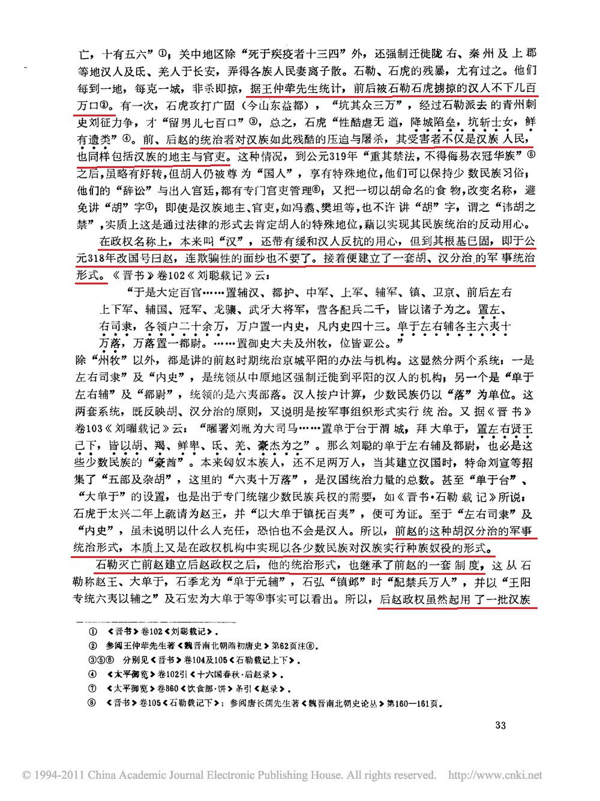
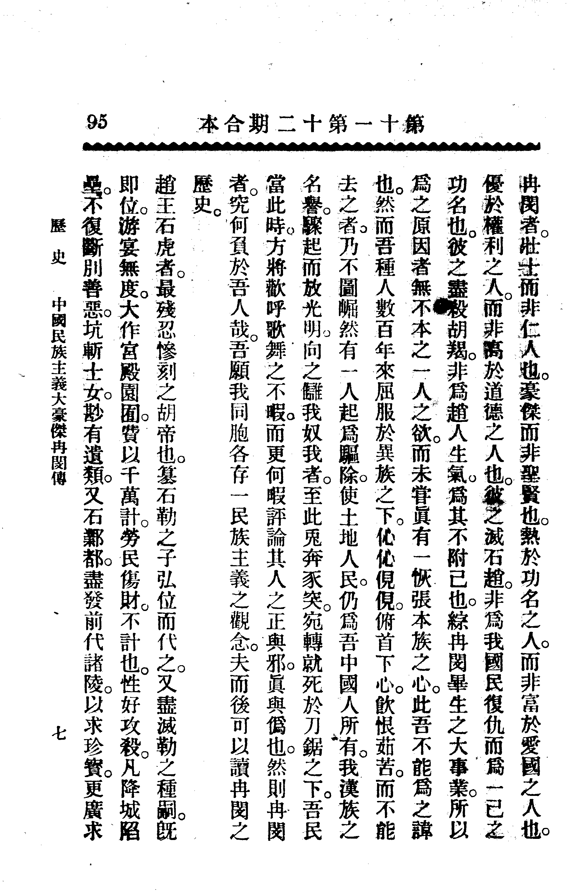

关于冉闵之争论在网上由来已久，起初以冉吹为主，大概从04年开始，冉闵被吹得神乎其神，乃至出现了各种原（发）创（明）情（历）节（史）吹捧冉闵的小说、网文，还有那篇著名的伪造《杀胡令》，皆是冉吹的发明。
物极必反，吹得太过必然导致被黑得更惨，于是接下来冉黑通过指出冉吹的史实错误将其打脸，并对无脑吹进行辟谣，逐渐占据了评论冉闵的舆论制高点。现在冉闵的话题虽然热度很低，但大部分都是黑他的。
应该承认冉黑的出现对于正确认识历史、打击谣言是有一定贡献的。不过矫枉难免过正，现在我只要说一句冉闵是民族英雄，肯定立马被扣上“冉吹”帽子。现在主流观点是：冉闵是汉奸、三姓家奴；冉闵杀胡并不是出于民族大义只是狭隘的争权夺利；前燕给冉闵的谥号“武悼”是恶谥；视冉闵为民族英雄是网络皇汉的发明……
我认为，以上观点皆不当，是为了反对一个极端走向了另一个极端。不仅如此，我认为，承认冉闵是民族英雄，是合理的。
“你现在还敢给冉闵翻案，读过历史书吗？MDZZ”——估计一定会有人这么说吧。
事实真的如此吗？那么，我就用历史书上的内容来作证，阐明一下我的观点。
一、所谓“三姓家奴”问题
这里所说冉闵的所谓“三姓”即是石、李、冉。因为冉闵之父冉瞻十二岁就被石勒俘获（那时候冉闵肯定还没出生），并成为石虎的养子，因此改姓石，冉闵是石虎养孙，自然也就姓石。冉是他的本姓，冉闵灭后赵，改元称帝，恢复了冉姓。
至于李，就比较奇葩，其出处见于《资治通鉴》：
（永和六年，350）春，正月，赵大将军闵欲灭去石氏之迹，托以谶文有「继赵李」，更国号曰卫，易姓李氏，大赦，改元青龙。
有人以此作为依据，声称冉闵改姓了李。不过冉闵当时不是皇帝而是大将军，后赵皇帝是石鉴。这个“易姓改号”是石闵让石鉴做的，尽管是出自石闵的动机，石鉴当时也并无实权，不过改国号、改元这事当然得由皇帝来做，那么我们可以看出这个“易姓李氏”如果真有，那也是石鉴做的。可能有人要问了，石闵当时也算是石氏宗室一员，那既然皇帝都改姓了皇族是不是也得改？有道理，不过问题在于从史书记载来看，在这“易姓李氏”之后，该姓石的还是姓石，没姓李（能够证明改国号为卫的倒是有一句“卫主鉴密遣宦者赍书召张沈等，使乘虚袭邺”，不过也仅有这一句了）。也就是说，这个“易姓李氏”即使发生了也和没发生一样，其实可以忽略不计。
另外，所谓“三姓家奴”含义就是给三个（或者指多个）不同的姓（的政权）做家奴吧？可是冉闵就算说做过家奴也只给后赵石氏做过（前面已经说了所谓“李氏”根本可以忽略），而冉氏代表了他自己建立的政权，哪有自己给自己做家奴一说？所以说冉闵做过“一姓家奴”倒还有道理，所谓“三姓家奴”纯粹胡扯。
二、“汉奸”问题与冉闵反胡动机
汉奸，顾名思义指的是汉族的败类。就冉闵早期为后赵政权服务的经历来看似乎确实是汉奸行为，不过冉闵打小就在后赵宫廷长大，又被胡人抚养（《晋书》：“闵幼而果锐，季龙抚之如孙”可以看出），从生活环境来看受胡人影响很深，汉民族意识理应不是很强，为胡人服务也算情有可原，并不像历史上大多数汉奸一样从小在汉文化环境中长大，父母亲戚和身边的人都是汉人，长大以后却背叛汉族投靠异族。评价一个历史人物应该全面，如果只看冉闵早期为后赵服务的经历就说其是汉奸，而忽视了冉闵后期的反胡经历，是不全面的。有人说冉闵反胡纯粹是因为冉闵想要窃取后赵统治权，是统计集团的争权夺利而不是出于民族意识。真的是这样吗？
协助冉闵夺权并成为冉闵部下的李农，就和乞活军建立了联系
如果冉闵只是为了争权夺利，那么只要夺取后赵统治权，消灭统治集团的其他反对者就行了，用不着反胡啊，冉闵在宣布杀胡令之前也一直在进行权力斗争，冉闵之所以从进行统治集团内部的权力斗争走向反胡的民族斗争，民族意识是起了重要作用的。
按吕思勉意见，冉闵本来没有什么民族意识，冉闵本来只是想清除异己而不是把斗争对象扩大到整个胡人群体：
（冉闵借石鉴名义）令城内曰：”与官同心者住，不同心者各任所之。”敕城门不复相禁。
——《晋书》
但是之后胡人的行为表明胡人与他根本不同心：
于是赵人（即汉人）百里内悉入城，胡羯去者填门。闵知胡之不为己用也，班令内外赵人，斩一胡首送凤阳门者，文官进位三等，武职悉拜牙门。一日之中，斩首数万。闵躬率赵人诛诸胡羯，无贵贱男女少长皆斩之，死者二十余万，尸诸城外，悉为野犬豺狼所食。屯据四方者，所在承闵书诛之，于时高鼻多须至有滥死者半。
——《晋书》
这才是激发出冉闵的汉民族意识，导致他诛胡的导火线（上文说的冉闵反胡有深刻思想背景，虽主要是推测，但或可算作深层原因）。
有人认为冉闵从为胡人服务到反胡的转变太快，所以并不是真心反胡，其实早在“各任所之”之令之前，冉闵与胡人的矛盾已经显露：
闵、农攻斩伏都等自凤阳至琨华，横尸相枕，流血成渠。宣令内外，六夷敢称兵仗者斩，〔称，举也。〕胡人或斩关、或踰城而出者，不可胜数。〔闵既诛孙伏都等，又禁胡人称兵仗，胡人知祸之将及，故去。胜，音升。〕
——《资治通鉴（胡三省注）》
那么结合冉闵反胡的深层原因和导火线可以看出冉闵反胡是出于民族意识所言非虚。
三、冉闵反胡斗争是否坚定
有人说，冉闵反胡并不坚定，主要根据有：
十一月，魏主闵帅步骑十万攻襄国。署其子太原王胤为大单于、骑骑大将军，以降胡一千配之为麾下。光禄大夫韦謏谏曰：「胡、羯皆我之仇敌，〔謏，蓟鸟翻。闵先诛胡、羯，故謏云然。〕今来归附，苟存性命耳；万一为变，悔之何及。请诛屏降胡，去单于之号，以防微杜渐。」闵方欲抚纳群胡，大怒，诛謏及其子伯阳。〔为下降胡执胤降赵张本。〕
——《资治通鉴》
固然，韦謏的劝谏是出于民族大义，冉闵封其子为大单于、收纳降胡的做法似乎违背反胡初衷，但是纵观历史，无论哪个民族，驱使外族为自己作战的例子屡见不鲜。无论是五胡政权、蒙元、满清还是汉、唐、明，都有利用外族作战的经历，虽然有风险，但却是出于策略。冉闵杀韦謏，可以体现出他的刚愎自用，但如果因此就说冉闵反胡不坚定，那又如何解释冉闵自宣布杀胡直到死都没有停止对胡人作战的事实（不举例了，《晋书》、《资治通鉴》上详细记载了）呢？如何解释冉闵开始反胡斗争后各族胡人一致对抗冉闵呢？
从一些侧面可以看出冉闵有强烈的民族意识（至少自宣布杀胡以来），且他的反胡态度是坚定的。
赵新兴王祗即皇帝位于襄国，改元永宁。以汝阴王琨为相国，六夷据州郡【章：十二竹本「郡」下有「拥兵」二字；乙十一行本同；退斋校同。】者皆应之。
——《资治通鉴》
从辛谧之举、吕思勉对他“除胡、羯，以绥华夏”、“锐于廓清”之评价还有冉闵遣使告晋的内容说明冉闵确实志在除胡。
三月，姚苌及赵汝阴王琨各引兵救襄国。冉闵遣车骑将军胡睦拒襄于长芦，将军孙威拒琨于黄丘，〕皆败还，士卒略尽。
闵欲自出击之，卫将军王泰谏曰：「今襄国未下，外救云集，若我出战，必覆背受敌，此危道也。不若固垒以挫其锐，徐观其衅而击之。且陛下亲临行陈，如失万全，则大事去矣。」
闵将止，道士法饶进曰：「陛下围襄国经年，无尺寸之功；今贼至，又避不击，将何以使将士乎！且太白入昴，当杀胡王，百战百克，不可失也！」闵攘袂大言曰：「吾战决矣，敢沮众者斩！」乃悉众出，与襄、琨战。
——《资治通鉴》
冉闵急于与胡人作战（不过冉闵轻敌冒进、刚愎自用，听不进有益的意见，导致这战吃了个大败，冉魏因此元气大伤），也可体现出冉闵坚决反胡的立场。
刘显次于明光宫，去邺二十三里，闵惧，召卫将军王泰议之。泰恚其谋之不从，辞以疮甚。闵亲临问之，固称疾笃。闵怒，还宫，顾谓左右曰：”巴奴，乃公岂假汝为命邪！要将先灭群胡，却斩王泰。”
——《晋书》
虽然是气话，不过“要将先灭群胡”也体现了冉闵的决心。
己卯，冉闵至蓟。（慕容）儁大赦。立闵而责之曰：「汝奴仆下才，何得妄称帝﹖」闵曰：「天下大乱，尔曹夷狄禽兽之类犹称帝，况我中土英雄，何得不【章：十二行本「何得不」作「何为不得」四字；乙十二行本同；孔本同；张校同。】称帝邪！」儁怒，鞭之三百，送于龙城。
——《资治通鉴》
冉闵这段著名的遗言（至少在史书上是他说的最后一句话）也体现了强烈的民族意识。慕容儁原本对他大赦，只要他投降就能活命，但冉闵用大骂慕容儁的方式拒绝投降，这直接导致他被杀死。如果他没有民族大义，而只是个在乎个人利益的机会主义者，他为什么要放弃这一大赦的机会呢？
由此可见，冉闵的反胡斗争是坚决的，冉闵在反胡斗争中表现出的的民族意识是强烈的。如果进行客观全面的评价，说冉闵是汉奸是不妥的。
四、当时的时代背景与冉闵反胡之正义性
冉闵反胡，自邺城杀胡始，民族仇杀无疑是一种极端的行为，很多人因此非议冉闵。但是，你们有没有考虑当时的时代背景？为什么会出现这么激烈的民族仇杀？这责任在于冉闵吗？
（5）为“冉闵特殊的生活背景”，前文已述
由此可以看出，冉闵反胡不仅是出于他自己的意志，也代表了中原汉族人民的心声，因此他才会广受汉族支持。
闵知胡之不为己用，班令内外：「赵人斩一胡首送凤阳门者，文官进位三等，武官乘拜牙门。」一日之中，斩首数万。闵亲帅赵人以诛胡、羯，无贵贱、男女、少长皆斩之，〔少，诗照翻。长，知两翻。〕死者二十余万，尸诸城外，悉为野犬豺狼所食。其屯戍四方者，闵皆以书命赵人为将帅者诛之，或高鼻多须滥死者半。〔高鼻多须，其状似羯、胡，故亦见杀。将，即亮翻。帅，所类翻。〕
——《资治通鉴》
有人因为冉闵诛胡误杀了很多高鼻深目的汉人而贬低他，殊不知误杀高鼻多须汉人的现象并未发生在邺城，从“其屯戍四方者，闵皆以书命赵人为将帅者诛之，或高鼻多须滥死者半”这句看，应该是四方响应屠胡时失控出现了误杀（再说汉族人里有这种极为特殊长相的肯定是少数）。结合当时时代背景，这种杀胡行为是具有反抗异族压迫的正义性的，可以视作起义。
历史上的起义，不乏有各种劣迹，这是值得批判的，但是我们也要具体问题具体分析，不能因为其中的局限性就否认整个起义的正义性和进步性。我们应当承认冉闵诛胡是具有正义性、进步性的，正义性体现在反抗异族压迫（不仅有民族压迫，还有阶级压迫），进步性体现在为当时其他中原异族统治者提供了教训，之后统治中原的异族统治者再怎么压迫汉人毕竟也比后赵温和。

由此可见，冉闵率领汉族人反抗异族暴政，在当时是深得（汉族）人心的，无疑可以被视为民族英雄。冉闵固然刚愎自用、缺乏战略眼光，但这不能抹杀他领导汉族人民反胡斗争的正义性和进步性。冉闵散发仓库赈济饥民、清定九流、准才授任，也比石氏的暴政强得多。有人把“青、雍、幽、荆州徙户及诸氐、羌、胡、蛮数百余万，各还本土，道路交错，互相杀掠，且饥疫死亡，其能达者十有二三。诸夏纷乱，无复农者”的悲剧归咎于冉闵。这是十分荒谬的说法，好比“不作安安饿殍，效尤奋臂螳螂”的神逻辑。
冉闵表示这锅我TM不背。
补充：冉闵反胡斗争是当时社会主要矛盾的体现，不仅具有反抗民族奴役的正义性，也是顺应历史发展潮流的


五、“武悼”是不是恶谥
还有一种奇葩说法，说慕容儁给冉闵的谥号“武悼”是恶谥，我建议您还是去看看《谥法研究》吧。
我们把两个字分开，一个一个看，首先是“武”（恶谥我用黄色标出来了）：

除了一个“夸志多穷”其他都是褒义好吗？“武”根本就是一个美谥好吗！用脑子想一想慕容儁给冉闵谥号就是因为畏惧汉族人对冉闵的同情，怎么可能给一个恶谥？
然后看“悼”，哦书里已经标出来了，这是一个中谥：


所以“武悼”是一个美谥一个中谥，总体仍是美谥，根本没有恶谥一说。
六、将冉闵视为民族英雄是不是网络皇汉的发明
冉闵受到不少皇汉的支持，很多人反对冉闵，其实是反对皇汉。很多人对冉闵嗤之以鼻：哼，都是那帮网上的皇汉吹出来的，皇汉还是多读点书认点字吧！
然而事实是……将冉闵视为民族英雄可以追溯到晚清民国时期。
1.1904年《江苏》第十一十二合期：《中国民族主义大豪杰冉闵传》
1904年《江苏》杂志第十一、十二合期一篇署名“荆驼”的文章《中国民族主义大豪杰冉闵传》将冉闵评为“震古烁今，扭转乾坤”的“中国民族主义大豪杰”，连高中历史题上都引用了。





2.1908年《竞业旬报》第十四、十五期：《中国伟人冉闵传略》
3.1940年《中国历史上之民族英雄》
民国二十九年（1940）二月初版、商务印书馆出版发行的《中国历史上之民族英雄》（刘觉著）中也有一章专门讲冉闵。冉闵一章前半部分内容主要引自《晋书》，叙述冉闵的生平经历，我把我认为最有价值的作者评价的部分引用过来。

（刘）觉曰：石氏以羯族犬羊之种，盗窃中原，躬凶聘暴，以致【惵惵遗黎，求哀无地】（出自《晋书·石季龙载记下》，原文标点位置有误，特以【】表明改正后内容），夷狄残犷，斯为极甚。冉闵躬率汉人，大诛胡羯，且遣使告晋，共讨逆胡，虽大义未竟，然能为汉族报仇雪恨，俾中原遗藜，稍得摅其宿愤。于五胡云扰之会，我汉族乃有如此英特之人物，后之读史者，所当引以自慰者也。昔赵武灵王尝谓先时中山负强，侵暴吾国，係累吾民，先王丑之，而怨未能报，而其后武灵竟灭中山。汉武帝欲困匈奴，尝诏天下曰：昔高帝遗朕平城之忧，高后时，单于书，绝悖逆。昔齐襄公复九世之仇，春秋大之，而终能犁庭扫穴，漠南遂无王庭。及其孙宣帝时，匈奴竟款塞来朝焉。今冉闵之大诛胡羯，论其志绩，盖足追纵赵汉矣。夫民族意识，偕有生以俱来，即禽雀牲畜，亦无不以自护其族为当然。今倭人之所以加诸我族者如何？吾人远览前绩，俯怵今祸，尚不愧愤于中，而思所以复仇者，殆非人耶！
——《中国历史上之民族英雄》
4.《新大众》1945年第7期《中华英烈传：第一篇》
这篇文章褒扬冉闵为“反正英雄”。时值抗战胜利前夕，作者试图用冉闵“给伪军伪组织朋友们做个榜样”，劝他们赶紧弃暗投明，不要再当异族鹰犬。

现在说一句冉闵是民族英雄竟然都要被喷，看来人们总是健忘的。
总结：冉闵反胡是出于民族意识，他本人的反胡斗争是坚决的。冉闵反胡的行为深受汉族人支持，具有正义性与进步性，甚至得到了敌人的敬畏，将冉闵视为民族英雄也有其渊源。因此，冉闵可以被称为民族英雄。评价冉闵，不能脱离其所处时代背景，而且一定要建立在事实基础上。
引用资料（本文大量参考了百度贴吧“冉魏历史吧”整理的资料，感谢“轻拂寒霜妩媚生”整理相关资料）：《晋书》、《资治通鉴》、吕思勉《两晋南北朝史》、王仲荦《魏晋南北朝史》、范文澜《中国通史简编》、《中国通史》、汪受宽《谥法研究》、康亚军《后赵国史研究》、高敏《试论两晋时期社会主要矛盾的演变过程》、刘觉《中国历史上之民族英雄》、荆驼《中国民族主义大豪杰冉闵传》、海外散人《中国伟人冉闵传略》、王千秋《中华英烈传：第一篇》